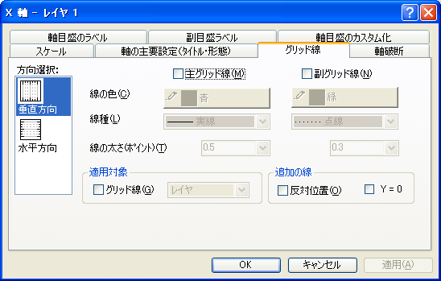

内容 |
| 水平方向 |
これは通常 (下または上の)X軸を表します。ただし、X軸とY軸を交換している場合(｢グラフ操作：X軸とY軸の交換｣メニューコマンド)や、グラフの種類が横棒、浮動横棒、積み上げ横棒の場合は(左または右の)Y軸を表します。 |
|---|---|
| 垂直方向 |
これは通常 (左または右の)Y軸を表します。ただし、X軸とY軸を交換している場合(｢グラフ操作：X軸とY軸の交換｣メニューコマンド)や、グラフの種類が横棒、浮動横棒、積み上げ横棒の場合は(下または上の)X軸を表します。 |
| Z軸 |
これは、デフォルトで、前Z軸および後Z軸です。 |
軸の属性を編集し終えたら、軸位置選択リストボックスから適切なアイコンを選択して、グラフの別の軸を編集することができます。選択した設定をグラフに適用するのをやめるには、編集中にキャンセルボタンをクリックします(適用ボタンを押す前に)
このグループの『グリッド線』チェックボックスにチェックすると、設定された主グリッド線と副グリッド線の『線の色』、『線種』、『線の太さ』の属性の適用対象を、ウィンドウ全体、あるいは全てのグラフウィンドウ内の軸に広げることができます。付随のドロップダウンリストから、適用対象となる、｢レイヤ｣(デフォルト)、｢ウィンドウ｣、(現プロジェクトの)｢全てのウィンドウ｣のいずれかを選びます。